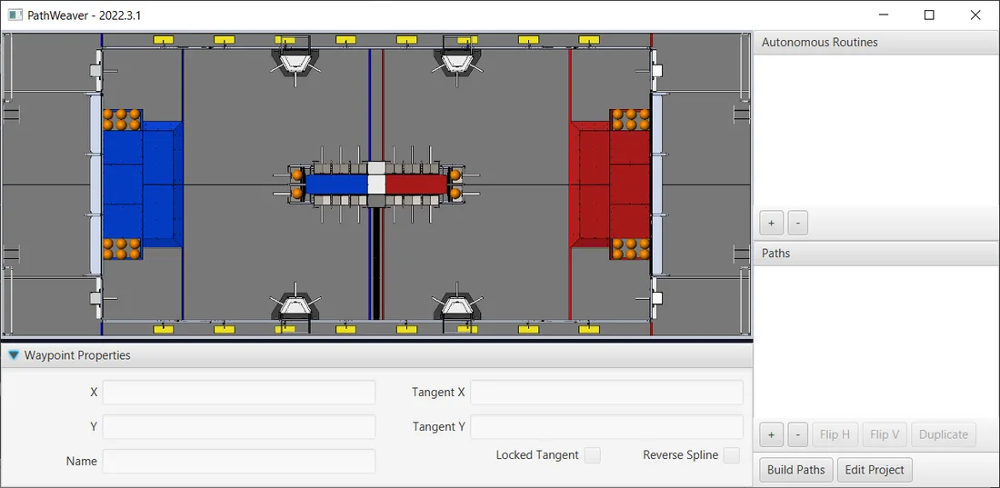
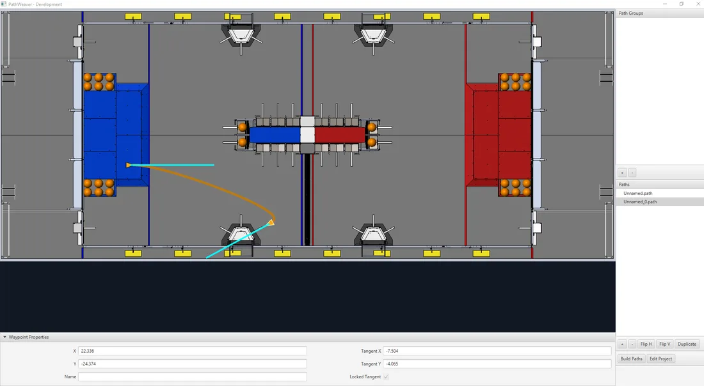
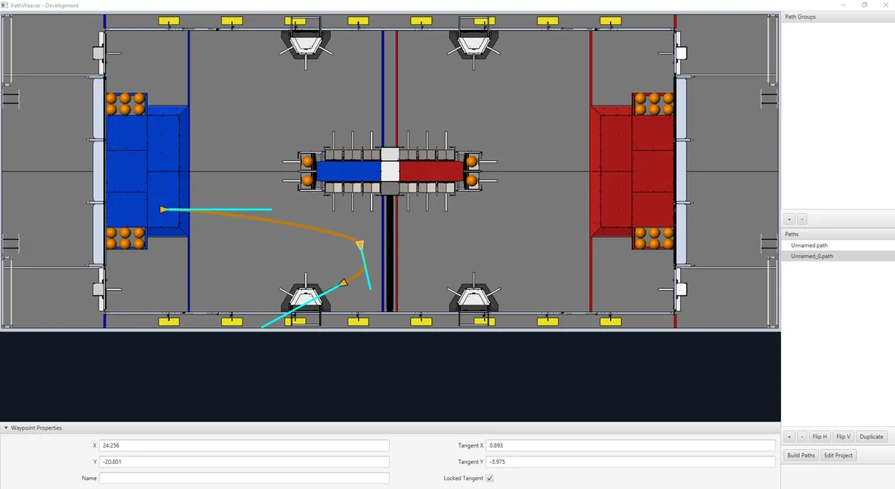

Week 13 - PathWeaver
Understanding and programming robot trajectories can be challenging. Fortunately, there are tools like Pathweaver, provided by WPILib, which simplify this task. In this lesson, we'll dive into Pathweaver, understanding its utility, capturing required measurements, and implementing the generated paths in code.
What is Pathweaver?
Pathweaver is a graphical interface tool for generating complex robot paths or trajectories. By setting waypoints and defining curves, teams can direct their robots to follow specific paths on the field. These paths can be exported and utilized within robot code, ensuring accurate and optimized robot movement during matches.
Capturing Required Measurements for the Robot
To achieve optimal performance with Pathweaver, you'll need accurate robot measurements. Specifically:
-
Wheelbase Width and Track Width: Measure the distance between wheels on each side (left-to-right) for wheelbase width and front-to-back for track width.
-
Robot Max Velocity and Acceleration: These can be obtained either through testing or by referring to the motor and gearbox specifications. Real-world testing is recommended for better accuracy.
Getting Started with Pathweaver
- Open Pathweaver from your WPILib Tools
- Create a New Project:
- Click 'Create Project'
- Select a Project Directory
- Select an Output Directory
- Select the correct Game.
- Length Unit: Meter
- Export Unit: Always Meters
- Max Velocity/Max Acceleration/Track Width: Details based on your specific robot
- Click 'Create Projet'
PathWeaver User Interface
The PathWeaver user interface consists of the following: 
- The field area in the top left corner, which takes up most of the PathWeaver window. Trajectories are drawn on this part of the program.
- The properties of the currently selected waypoint are displayed in the bottom pane. These properties include the X and Y, along with the tangents at each point.
- A group of paths (or an “autonomous” mode) is displayed on the upper right side of the window. This is a convenient way of seeing all of the trajectories in a single auto mode.
- The individual paths that a robot might follow are displayed in the lower right side of the window.
- The “Build Paths” button will export the trajectories in a JSON format. These JSON files can be used from the robot code to follow the trajectory.
- The “Edit Project” button allows you to edit the project properties.
Using Pathweaver
- Creating the Initial Trajectory: To start creating a trajectory, click the + (plus) button in the path window. A default trajectory will be created that probably does not have the proper start and end points that you desire. The path also shows the tangent vectors (teal lines) for the start and end points. Changing the angle of the tangent vectors changes the shape of the trajectory. Drag the start and end points of the trajectory to the desired locations. Notice that in this case, the default trajectory does not start in a legal spot for the 2019 game. We can drag the initial waypoint to make the robot start on the HAB.
- Changing a Waypoint Heading: The robot heading can be changed by dragging the tangent vector (teal) line. Here, the final waypoint was dragged to the desired final pose and was rotated to face the rocket. 
- Adding Additional Waypoints to Control the Robot Path: Adding additional waypoints and changing their tangent vectors can affect the path that is followed. Additional waypoints can be added by dragging in the middle of the path. In this case, we added another waypoint in the middle of the path. 
- Locking the Tangent Lines: Locking tangent lines prevents them from changing when the trajectory is being manipulated. The tangent lines will also be locked when the point is moved.
- More Precise control of Waypoints: While PathWeaver makes it simple to draw trajectories that the robot should follow, it is sometimes hard to precisely set where the waypoints should be placed. In this case, setting the waypoint locations can be done by entering the X and Y value which might come from an accurate CAD model of the field. The points can be entered in the X and Y fields when a waypoint is selected.
Implementing the Path in Code
-
Export Path: After building paths in Pathweaver, export them to a directory in your robot project.
-
Utilize WPILib Trajectory Utilities:
import edu.wpi.first.wpilibj.trajectory.Trajectory; import edu.wpi.first.wpilibj.trajectory.TrajectoryUtil; import java.nio.file.Paths;
Trajectory trajectory = TrajectoryUtil.fromPathweaverJson(Paths.get("YourPathWeaverOutput.json"));
Tasks
- Create Your First Path: Launch Pathweaver and create a simple S-shaped path on the field. Export this path.
- Implement Path in Code: Use the above-mentioned steps to integrate your generated path into your robot code. Execute this path in a simulator or on the actual robot.
- Modify Robot Parameters: Tweak robot velocity, acceleration, and other parameters in Pathweaver. Observe the effects of these changes in execution.
- Complex Path Creation: Try creating a more complex path that utilizes the full potential of Pathweaver’s waypoint and curve system. Integrate and execute this path.
Additional Resources
WPILib Trajectory Documentation